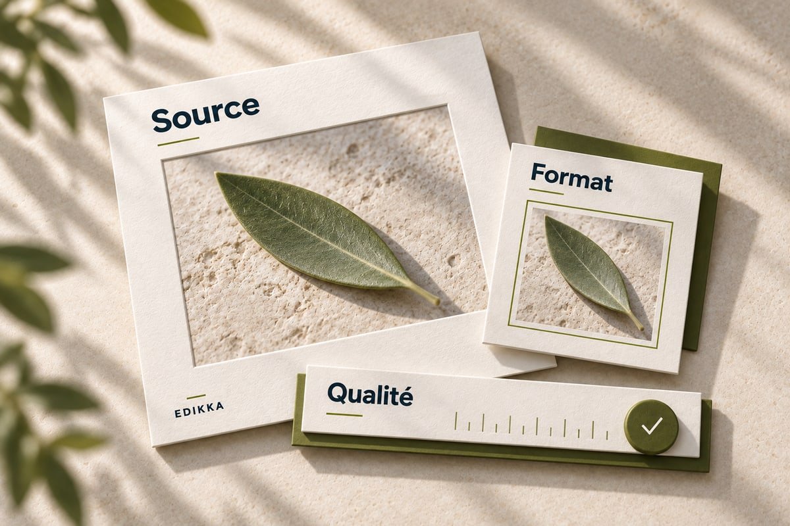

Une image, puis la suite.

Le texte poursuit sa place dans la page. Regardez le repère situé juste sous ce paragraphe.
Repère de lecture — après l’image

Le texte poursuit sa place dans la page. Regardez le repère situé juste sous ce paragraphe.